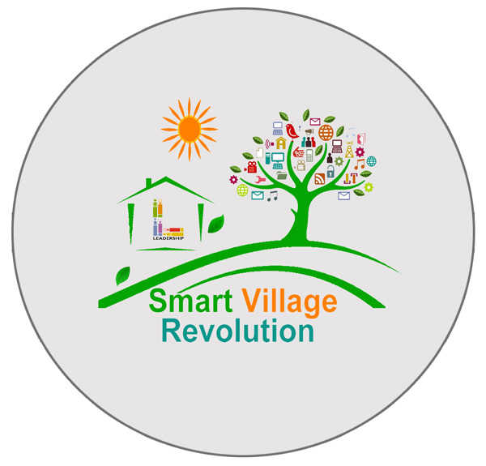
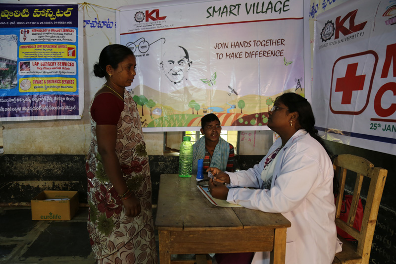
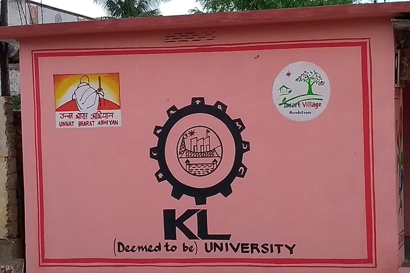
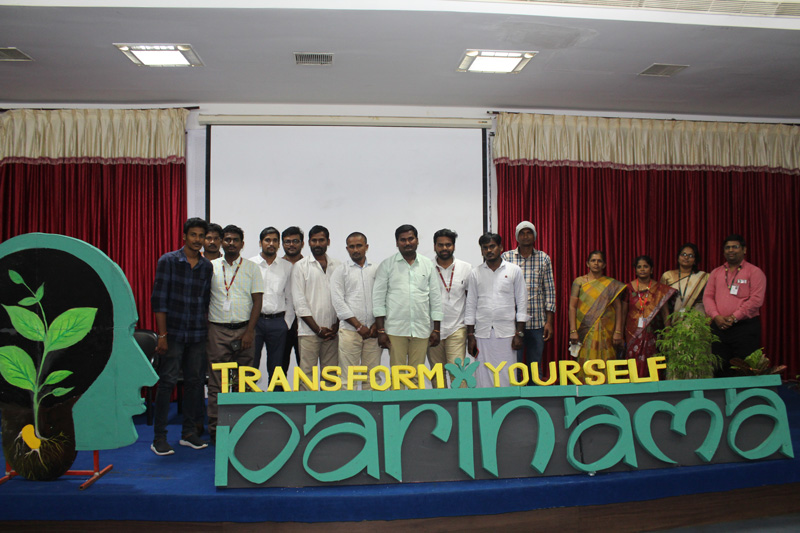
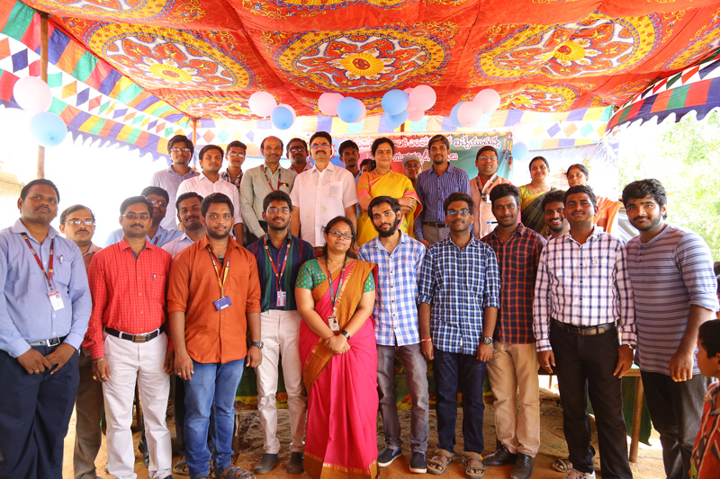
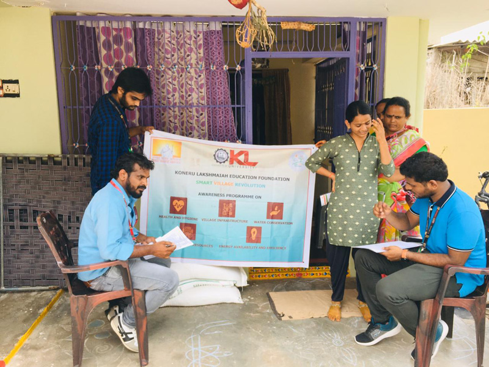
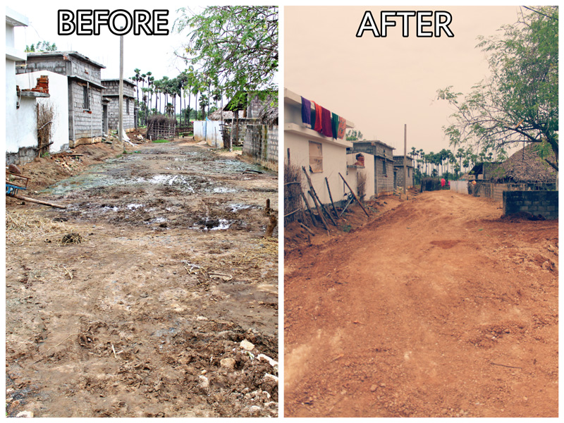
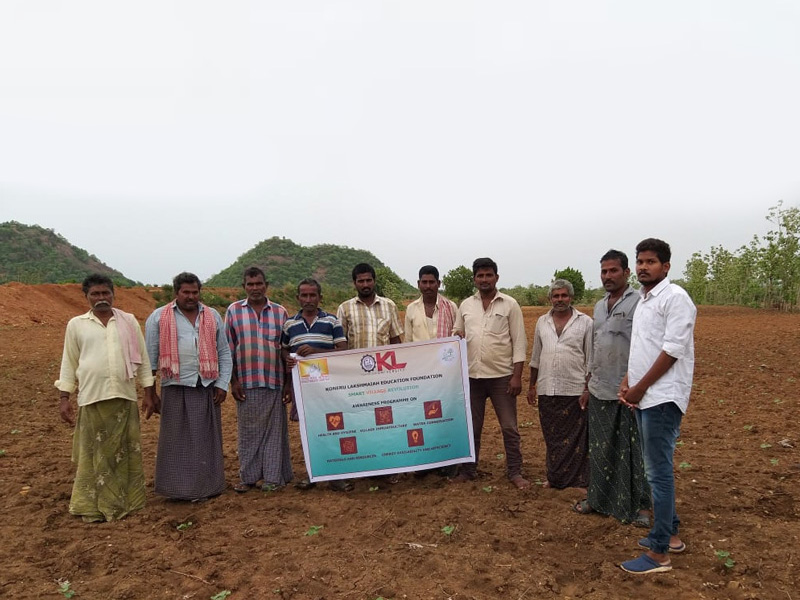

What is Smart Village Project?
Unnat Bharat Abhiyan (UBA) is a flagship programme by the Ministry of Human Resource Development (MHRD), Government of India. This creates a platform for the faculty and students of higher educational institutions to work with the people of rural India to identify developmental challenges and to provide appropriate solutions to accelerate sustainable growth of a village.
The Objectives of this Program:
- To create a virtuous cycle between society and an inclusive academic system
- To provide knowledge and share best practices for emerging professions
- To upgrade the capabilities of both the public and the private sectors for the development of rural India
Activities
To inspire the rural communities, mobilize forces & resources for sustainable development, to create an ecosystem for positive behavioural transformation, and for the holistic development of villages, we have taken up activities in the following segments:
Reports
2022-2023
2021-2022
2020-2021
| S.No | Date | Name of the activity | Place | Number of Teachers Participated | Number of students participated in such activities | Reports |
|---|---|---|---|---|---|---|
| 1 | 30/06/2020 | 1-Awareness-on-COVID-19-and-Activities. | Mylavaram Mandal | 16 | 72 | 1-Awareness-on-COVID-19-and-Activities. |
| 2 | 15/07/2020 | 2-Awareness-on-Safe-disposal-of-Masks | Mylavaram Mandal | 16 | 48 | 2-Awareness-on-Safe-disposal-of-Masks |
| 3 | 27/07/2020 | 3-Awareness-on-Swachatha-activities | G.Konduru | 14 | 62 | 3-Awareness-on-Swachatha-activities |
| 4 | 16/08/2020 | 4-Awareness-on-De-worming | Pinapaka | 15 | 64 | 4-Awareness-on-De-worming |
| 5 | 19/08/2020 | 5-Tree-Plantation-at-KLEF-SVR-adopted-villages | Mylavaram Mandal | 15 | 51 | 5-Tree-Plantation-at-KLEF-SVR-adopted-villages |
| 6 | 22/08/2020 | 6-Awareness-on-Clay-Vinayaka | Vellaturu | 15 | 62 | 6-Awareness-on-Clay-Vinayaka |
| 7 | 10/9/2020 | 7-Awareness-on-Rain-water-harvesting | Telladevarapadu | 15 | 52 | 7-Awareness-on-Rain-water-harvesting |
| 8 | 16/09/2020 | 8-World-Ozone-Day | Pinapaka | 15 | 39 | 8-World-Ozone-Day |
| 9 | 24/09/2020 | 9-New-Education-Policy | Reddigudem | 16 | 48 | 9-New-Education-Policy |
| 10 | 30/09/2020 | 10-Kitchen-gardening-at-Porat-nagar | Porat Nagar | 15 | 72 | 10-Kitchen-gardening-at-Porat-nagar |
2019-2020
| S.No | Date | Name of the activity | Name of the Scheme | Venue | Duration | Number of teachers coordinated in such activities | Number of students participated in such activities | Reports |
|---|---|---|---|---|---|---|---|---|
| 1 | 17.09.2019 | House hold survey at Dasulapalem | House hold survey | K L E F & Panchayat Office Dasulapalem | 1 Day | 5 | 10 | House hold survey at Dasulapalem |
| 2 | 10.10.2019 | Awareness camp on Anemia at Pulluru | Awareness camp on Anemia | K L E F & Medical Officer Pulluru | 1 Day | 10 | 42 | Awareness camp on Anemia at Pulluru |
| 3 | 11.10.2019 | Awareness camp on Anemia at Sitarampuram Thanda | Awareness camp on Anemia | K L E F & Medical Officer Sitarampuram Thanda | 1 Day | 5 | 37 | Awareness camp on Anemia at Sitarampuram Thanda |
| 4 | 19.12.2019 | Rain water Harvesting at Musunuru | Rain water Harvesting | K L E F & Panchayat Office Musunuru | 1 Day | 8 | 15 | Rain water Harvesting at Musunuru |
| 5 | 06.08.2019 | Plantation with Geo tagging Dasulapalem | Clean & Green Atmosphere | K L E F & Panchayat Office Dasulapalem | 1 Day | 7 | 10 | Plantation with Geo tagging Dasulapalem |
| 6 | 13.08.2019 | Plantation with Geo tagging Sitarampuram thanda | Clean & Green Atmosphere | K L E F & Panchayat Sitarampuram Thanda | 1 Day | 9 | 20 | Plantation with Geo tagging Sitarampuram thanda |
| 7 | 20.08.2019 | Plantation with Geo tagging Pinapaka | Clean & Green Atmosphere | K L E F & Panchayat Pinapaka | 1 Day | 10 | 15 | Plantation with Geo tagging Pinapaka |
| 8 | 27.08.2019 | Plantation with Geo tagging Vellaturu | Clean & Green Atmosphere | K L E F & Panchayat Vellaturu | 1 Day | 5 | 10 | Plantation with Geo tagging Vellaturu |
| 9 | 03.09.2019 | Plantation with Geo tagging Porat nagar | Clean & Green Atmosphere | K L E F & Panchayat Porat Nagar | 1 Day | 6 | 20 | Plantation with Geo tagging Porat nagar |
| 10 | 10.09.2019 | Plantation with Geo tagging Kanimarla | Clean & Green Atmosphere | K L E F & Panchayat Kanimarla | 1 Day | 8 | 15 | Plantation with Geo tagging Kanimarla |
| 11 | 17.10.2019 | Awareness camp on ODF Kanimarla | Awareness camp on Open Defecation Free | K L E F & Panchayat Kanimarla | 1 Day | 7 | 10 | Awareness camp on ODF Kanimarla |
| 12 | 27.09.2019 | Awareness camp On Plastic free at Veduru Bedum | Awareness camp On Plastic free | K L E F & Panchayat Veduru Bedum | 1 Day | 6 | 39 | Awareness camp On Plastic free at Veduru Bedum |
| 13 | 27.09.2019 | Awareness camp On Plastic free at Porat nagar | Awareness camp On Plastic free | K L E F & Panchayat Porat Nagar | 1 Day | 8 | 44 | Awareness camp On Plastic free at Porat nagar |
| 14 | 27.09.2019 | Awareness camp On Plastic free at Dasulapalem | Awareness camp On Plastic free | K L E F & Panchayat Dasulapalem | 1 Day | 9 | 42 | Awareness camp On Plastic free at Dasulapalem |
| 15 | 27.09.2019 | Awareness camp On Plastic free at Sitarampuram Thanda | Awareness camp On Plastic free | K L E F & Panchayat Sitarampuram Thanda | 1 Day | 7 | 71 | Awareness camp On Plastic free at Sitarampuram Thanda |
| 16 | 27.09.2019 | Awareness camp On Plastic free at vellaturu | Awareness camp On Plastic free | K L E F & Panchayat Vellaturu | 1 Day | 5 | 52 | Awareness camp On Plastic free at vellaturu |
| 17 | 27.09.2019 | Awareness camp On Plastic free at Pinapaka | Awareness camp On Plastic free | K L E F & Panchayat Pinapaka | 1 Day | 6 | 51 | Awareness camp On Plastic free at Pinapaka |
| 18 | 27.09.2019 | Awareness camp On Plastic free at kanimarla | Awareness camp On Plastic free | K L E F & Panchayat Kanimerla | 1 Day | 5 | 51 | Awareness camp On Plastic free at kanimarla |
| 19 | 16.09.2019 | Awareness camp on Open Defecation Free at Vedurubedum | Awareness camp on Open Defecation Free | K L E F & Panchayat Vedurubedum | 1 Day | 7 | 41 | Awareness camp on Open Defecation Free at Vedurubedum |
| 20 | 16.09.2019 | Awareness camp on Open Defecation Free at Porat nagar | Awareness camp on Open Defecation Free | K L E F & Panchayat Porat Nagar | 1 Day | 8 | 44 | Awareness camp on Open Defecation Free at Porat nagar |
| 21 | 17.09.2019 | Awareness camp on Open Defecation Free at Dasulapalem | Awareness camp on Open Defecation Free | K L E F & Panchayat Dasulapalem | 1 Day | 9 | 50 | Awareness camp on Open Defecation Free at Dasulapalem |
| 22 | 17.09.2019 | Awareness camp on Open Defecation Free at Sitarampuram thanda | Awareness camp on Open Defecation Free | K L E F & Panchayat Sitarampuram Thanda | 1 Day | 6 | 43 | Awareness camp on Open Defecation Free at Sitarampuram thanda |
| 23 | 18.09.2019 | Awareness camp on Open Defecation Free at Vellaturu | Awareness camp on Open Defecation Free | K L E F & Panchayat Vellaturu | 1 Day | 5 | 52 | Awareness camp on Open Defecation Free at Vellaturu |
| 24 | 18.09.2019 | Awareness camp on Open Defecation Free at pinapaka | Awareness camp on Open Defecation Free | K L E F & Panchayat Pinapaka | 1 Day | 6 | 49 | Awareness camp on Open Defecation Free at pinapaka |
| 25 | 20.09.2019 | Awareness camp on Open Defecation Free at Sitarampuram thanda | Awareness camp on Open Defecation Free | K L E F & Panchayat Sitarampuram Thanda | 1 Day | 7 | 47 | Awareness camp on Open Defecation Free at Sitarampuram thanda |
| 26 | 20.09.2019 | Awareness camp on Open Defecation Free at Dasulapalem | Awareness camp on Open Defecation Free | K L E F & Panchayat Dasulapalem | 1 Day | 9 | 15 | Awareness camp on Open Defecation Free at Dasulapalem |
| 27 | 06.10.2019 | Plantation with Geo tagging Dasulapalem | Greenery in Villages | K L E F & Panchayat Dasulapalem | 1 Day | 8 | 15 | Plantation with Geo tagging Dasulapalem |
| 28 | 11.10.2019 | Plantation with Geo tagging Sitarampuram thanda | Greenery in Villages | K L E F & Panchayat Sitarampuram Thanda | 1 Day | 7 | 20 | Plantation with Geo tagging Sitarampuram thanda |
| 29 | 22.10.2019 | Plantation with Geo tagging Pinapaka | Greenery in Villages | K L E F & Panchayat Pinapaka | 1 Day | 9 | 20 | Plantation with Geo tagging Pinapaka |
| 30 | 27.11.2019 | Plantation with Geo tagging Vellaturu | Greenery in Villages | K L E F & Panchayat Vellaturu | 1 Day | 5 | 15 | Plantation with Geo tagging Vellaturu |
| 31 | 03.11.2019 | Plantation with Geo tagging Porat nagar | Greenery in Villages | K L E F & Panchayat Porat Nagar | 1 Day | 5 | 15 | Plantation with Geo tagging Porat nagar |
| 32 | 16.12.2019 | Plantation with Geo tagging Kanimarla | Greenery in Villages | K L E F & Panchayat Kanimarla | 1 Day | 9 | 20 | Plantation with Geo tagging Kanimarla |
| 33 | 23.09.2019 | Medical Camp at Vellaturu | Educate the Villagers towards Medication | K L E F & Medical Officer Vellaturu | 1 Day | 8 | 20 | Medical Camp at Vellaturu |
| 34 | 20.07.2019 | Medical Camp at Pinapaka | Educate the Villagers towards Medication | K L E F & Medical Officer Pinapaka | 1 Day | 7 | 20 | Medical Camp at Pinapaka |
| 35 | 27.07.2019 | Medical Camp at Dasulapalem | Educate the Villagers towards Medication | K L E F & Medical Officer Dasulapalem | 1 Day | 6 | 15 | Medical Camp at Dasulapalem |
| 36 | 17.08.2019 | Medical Camp at Porat nagar | Educate the Villagers towards Medication | K L E F & Medical Officer Porat Nagar | 1 Day | 5 | 15 | Medical Camp at Porat nagar |
| 37 | 24.08.2019 | Medical Camp at Kanimarla | Educate the Villagers towards Medication | K L E F & Medical Officer Kanimarla | 1 Day | 5 | 20 | Medical Camp at Kanimarla |
| 38 | 31.08.2019 | Medical Camp at Sitarampuram thanda | Educate the Villagers towards Medication | K L E F & Medical Officer Sitarampuram Thanda | 1 Day | 6 | 10 | Medical Camp at Sitarampuram thanda |
| 39 | 14.09.2019 | Medical Camp at vedurubedam | Educate the Villagers towards Medication | K L E F & Medical Officer Vedurubedam | 1 Day | 7 | 10 | Medical Camp at vedurubedam |
| 40 | 23.09.2019 | Medical Camp at Vellaturu | Educate the Villagers towards Medication | K L E F & Medical Officer Vellaturu | 1 Day | 8 | 15 | Medical Camp at Vellaturu |
| 41 | 30.09.2019 | Medical Camp at Pinapaka | Educate the Villagers towards Medication | K L E F & Medical Officer Pinapaka | 1 Day | 9 | 20 | Medical Camp at Pinapaka |
| 42 | 07.10.2019 | Medical Camp at Dasulapalem | Educate the Villagers towards Medication | K L E F & Medical Officer Dasulapalem | 1 Day | 5 | 15 | Medical Camp at Dasulapalem |
| 43 | 14.10.2019 | Medical Camp at Porat nagar | Educate the Villagers towards Medication | K L E F & Medical Officer Porat Nagar | 1 Day | 6 | 20 | Medical Camp at Porat nagar |
| 44 | 21.10.2019 | Medical Camp at Kanimarla | Educate the Villagers towards Medication | K L E F & Medical Officer Kanimarla | 1 Day | 8 | 10 | Medical Camp at Kanimarla |
| 45 | 10.10.2019 | Awareness camp on Anemia at Vellaturu | Awareness camp on Anemia | K L E F & Medical Officer Vellaturu | 1 Day | 7 | 41 | Awareness camp on Anemia at Vellaturu |
| 46 | 16.10.2019 | Awareness camp on Anemia at Kanimarla | Awareness camp on Anemia | K L E F & Medical Officer Kanimerla | 1 Day | 9 | 47 | Awareness camp on Anemia at Kanimarla |
| 47 | 14.10.2019 | Awareness camp on Anemia at Porat nagar | Awareness camp on Anemia | K L E F & Medical OfficerPorat Nagar | 1 Day | 8 | 49 | Awareness camp on Anemia at Porat nagar |
| 48 | 15.10.2019 | Awareness camp on Anemia at Dasulapalem | Awareness camp on Anemia | K L E F & Medical OfficerDasulapalem | 1 Day | 6 | 53 | Awareness camp on Anemia at Dasulapalem |
| 49 | 17.10.2019 | Awareness camp on Anemia at Pinapaka | Awareness camp on Anemia | K L E F & Medical Officer Pinapaka | 1 Day | 8 | 51 | Awareness camp on Anemia at Pinapaka |
| 50 | 22.08.2019 | Awareness camp on Anemia at Pulluru | Awareness camp on Anemia | K L E F & Medical Officer Pulluru | 1 Day | 9 | 51 | Awareness camp on Anemia at Pulluru |
| 51 | 10.10.2019 | Awareness camp on Anemia at Sitarampuram tanda | Awareness camp on Anemia | K L E F & Medical Officer Sitarampuram tanda | 1 Day | 7 | 49 | Awareness camp on Anemia at Sitarampuram tanda |
| 52 | 18.10.2019 | Awareness camp on Anemia at Vedurubedam | Awareness camp on Anemia | K L E F & Medical Officer Vedurubedam | 1 Day | 9 | 52 | Awareness camp on Anemia at Vedurubedam |
| 53 | 19.10.2019 | Awareness camp on Anemia at Mylavaram | Awareness camp on Anemia | K L E F & Medical Officer Mylavaram | 1 Day | 9 | 39 | Awareness camp on Anemia at Mylavaram |
| 54 | 22.02.2020 | Organisation of vermicompost at vellaturu | Preparation of vermicompost | K L E F & Agriculture Officer Mylavaram | 1 Day | 8 | 20 | Organisation of vermicompost at vellaturu |
| 55 | 11.10.2019 | Kitchen Gardening at Vellaturu | Plantation in House | K L E F & Panchayat Vellaturu | 1 Day | 8 | 20 | Kitchen Gardening at Vellaturu |
| 56 | 18.10.2019 | Kitchen Gardening at Dasulapalem | Plantation in House | K L E F & Panchayat Dasulapalem | 1 Day | 7 | 13 | Kitchen Gardening at Dasulapalem |
| 57 | 20.10.2019 | Kitchen Gardening at Kanimarla | Plantation in House | K L E F & Panchayat Kanimarla | 1 Day | 7 | 15 | Kitchen Gardening at Kanimarla |
| 58 | 22.10.2019 | Kitchen Gardening at Porat nagar | Plantation in House | K L E F & Panchayat Porat nagar | 1 Day | 6 | 20 | Kitchen Gardening at Porat nagar |
| 59 | 22.10.2019 | Kitchen Gardening at Sitarampuram tanda | Plantation in House | K L E F & Panchayat Sitarampuram tanda | 1 Day | 9 | 15 | Kitchen Gardening at Sitarampuram tanda |
| 60 | 23.10.2019 | Kitchen Gardening at Pinapaka | Plantation in House | K L E F & Panchayat Pinapaka | 1 Day | 8 | 15 | Kitchen Gardening at Pinapaka |
| 61 | 24.10.2019 | Kitchen Gardening at Vedurubedam | Plantation in House | K L E F & Panchayat Vedurupalem | 1 Day | 7 | 10 | Kitchen Gardening at Vedurubedam |
| 62 | 14.09.2019 | Awareness on Hand Wash at Vellaturu | Awareness on Hand Wash | K L E F & Panchayat Vellaturu | 1 Day | 6 | 10 | Awareness on Hand Wash at Vellaturu |
| 63 | 15.09.2019 | Awareness on Hand Wash at Sitaram puram tanda | Awareness on Hand Wash | K L E F & Panchayat Sitaram puram tanda | 1 Day | 5 | 29 | Awareness on Hand Wash at Sitaram puram tanda |
| 64 | 17.09.2019 | Awareness on Hand Wash at Kanimarla | Awareness on Hand Wash | K L E F & Panchayat Kanimarla | 1 Day | 5 | 33 | Awareness on Hand Wash at Kanimarla |
| 65 | 20.09.2019 | Awareness on Hand Wash at Pinapaka | Awareness on Hand Wash | K L E F & Panchayat Pinapaka | 1 Day | 6 | 37 | Awareness on Hand Wash at Pinapaka |
| 66 | 14.10.2019 | Awareness on Hand Wash at Dasulapalem | Awareness on Hand Wash | K L E F & Panchayat Dasulapalem | 1 Day | 7 | 35 | Awareness on Hand Wash at Dasulapalem |
| 67 | 18.10.2019 | Awareness on Hand Wash at Porat nagar | Awareness on Hand Wash | K L E F & Panchayat Porat nagar | 1 Day | 8 | 37 | Awareness on Hand Wash at Porat nagar |
| 68 | 10.01.2020 | Awareness on Hand Wash at Pulluru | Awareness on Hand Wash | K L E F & Panchayat Pulluru | 1 Day | 8 | 31 | Awareness on Hand Wash at Pulluru |
| 69 | 31.12.2019 | Wall painting at Velvadam | Beautification of walls | K L E F & Panchayat Velvadam | 7 Days | 7 | 20 | Wall painting at Velvadam |
| 70 | 16.11.2019 & 17.11.2019 | House hold survey at Dasulapalem | House hold survey | K L E F & Panchayat Dasulapalem | 2 Days | 8 | 17 | House hold survey at Dasulapalem |
| 71 | 14.12.2019 to 18.12.2019 | House hold survey at Sabjapadu | House hold survey | K L E F & Panchayat Sabjapadu | 5 Days | 9 | 15 | House hold survey at Sabjapadu |
| 72 | 28.12.2019 to 29.12.2019 | House hold survey at Kanimarla | House hold survey | K L E F & Panchayat Kanimarla | 2 Days | 6 | 19 | House hold survey at Kanimarla |
| 73 | 25.01.2020 to 27.01.2020 | House hold survey at Pinapaka | House hold survey | K L E F & Panchayat Pinapaka | 3 Days | 5 | 22 | House hold survey at Pinapaka |
| 74 | 28.02.2020 | Art and craft work to the School children at Pulluru | Drawing work to the School children | K L E F & Head Master of Panchayat School Pinapaka | 1 Day | 6 | 20 | Art and craft work to the School children at Pulluru |
| 75 | 23.02.2020 | Art and craft work to the School children at Dasulapalem | Drawing work to the School children | K L E F & Head Master of Panchayat School Dasulapalem | 1 Day | 7 | 19 | Art and craft work to the School children at Dasulapalem |
| 76 | 30.01.2020 | Art and craft work to the School children at Sitaram Puram thanda | Drawing work to the School children | K L E F & Head Master of Panchayat School Sitaram Puram thanda | 1 Day | 8 | 18 | Art and craft work to the School children at Sitaram Puram thanda |
| 77 | 02.01.2020 | Art and craft work to the School children at Kanimarla | Drawing work to the School children | K L E F & Head Master of Panchayat School Kanimarla | 1 Day | 9 | 18 | Art and craft work to the School children at Kanimarla |
| 78 | 04.01.2020 | Art and craft work to the School children at Porat nagar | Drawing work to the School children | K L E F & Head Master of Panchayat School Porat Nagar | 1 Day | 8 | 20 | Art and craft work to the School children at Porat nagar |
| 79 | 05.01.2020 | Art and craft work to the School children at Pinapaka | Drawing work to the School children | K L E F & Head Master of Panchayat School Pinapaka | 1 Day | 7 | 17 | Art and craft work to the School children at Pinapaka |
| 80 | 06.02.2020 | Art and craft work to the School children at Vellaturu | Drawing work to the School children | K L E F & Head Master of Panchayat School Vellaturu | 1 Day | 9 | 20 | Art and craft work to the School children at Vellaturu |
| 81 | 07.02.2020 | Art and craft work to the School children at Mylavaram | Drawing work to the School children | K L E F & Head Master of Panchayat School Mylavaram | 1 Day | 8 | 20 | Art and craft work to the School children at Mylavaram |
| 82 | 11.02.2020 | Art and craft work to the School children at G. Konduru | Drawing work to the School children | K L E F & Head Master of Panchayat School G. Konduru | 1 Day | 7 | 20 | Art and craft work to the School children at G. Konduru |
| 83 | 13.02.2020 | Art and craft work to the School children at Vedurubedam | Drawing work to the School children | K L E F & Head Master of Panchayat School Vedurubedam | 1 Day | 6 | 10 | Art and craft work to the School children at Vedurubedam |
| 84 | 03.09.2019 | Awareness on Solid waste management at Vellaturu | Awareness on Vermicompost | K L E F & Panchayat Vellaturu | 1 Day | 8 | 24 | Awareness on Solid waste management at Vellaturu |
| 85 | 03.09.2019 | Awareness on Solid waste management at Veduru bedam | Awareness on Vermicompost | K L E F & Panchayat Vellaturu | 1 Day | 9 | 23 | Awareness on Solid waste management at Veduru bedam |
| 86 | 04.09.2019 | Awareness on Solid waste management at Kanimarla | Awareness on Vermicompost | K L E F & Panchayat Kanimarla | 1 Day | 9 | 27 | Awareness on Solid waste management at Kanimarla |
| 87 | 06.09.2019 | Awareness on Solid waste management at Dasulapalem | Awareness on Vermicompost | K L E F & Panchayat Dasulapalem | 1 Day | 8 | 31 | Awareness on Solid waste management at Dasulapalem |
| 88 | 07.09.2019 | Awareness on Solid waste management at Sitarampuram Tanda | Awareness on Vermicompost | K L E F & Panchayat Sitarampuram Tanda | 1 Day | 7 | 31 | Awareness on Solid waste management at Sitarampuram Tanda |
| 89 | 10.09.2019 | Awareness on Solid waste management at Pulluru | Awareness on Vermicompost | K L E F & Panchayat Pulluru | 1 Day | 5 | 27 | Awareness on Solid waste management at Pulluru |
| 90 | 12.09.2019 | Awareness on Solid waste management at Pinapaka | Awareness on Vermicompost | K L E F & Panchayat Pinapaka | 1 Day | 6 | 33 | Awareness on Solid waste management at Pinapaka |
| 91 | 14.09.2019 | Awareness on Solid waste management at Mylavaram | Awareness on Vermicompost | K L E F & Panchayat Mylavaram | 1 Day | 7 | 31 | Awareness on Solid waste management at Mylavaram |
| 92 | 15.09.2019 | Awareness on Solid waste management at Porat nagar | Awareness on Vermicompost | K L E F & Panchayat Porat Nagar | 1 Day | 8 | 32 | Awareness on Solid waste management at Porat nagar |
| 93 | 18.09.2019 | Awareness on Solid waste management at Sabjapadu | Awareness on Vermicompost | K L E F & Panchayat Sabjapadu | 1 Day | 9 | 35 | Awareness on Solid waste management at Sabjapadu |
| 94 | 21.09.2019 | Awareness on Solid waste management at Keerthirayunigudem | Awareness on Vermicompost | K L E F & Panchayat Keerthirayunigudem | 1 Day | 8 | 34 | Awareness on Solid waste management at Keerthirayunigudem |
| 95 | 22.09.2019 | Awareness on Solid waste management at Chegireddipadu | Awareness on Vermicompost | K L E F & Panchayat Chegireddipadu | 1 Day | 7 | 33 | Awareness on Solid waste management at Chegireddipadu |
Villages Adopted
Kanimerla
Vellaturu
Dasulapallem
Sitarampuram thanda
Pinapaka







Contact Us
For more information reach out to us.
Address
Green Fields, Vaddeswaram,Guntur District, A.P., INDIA.
Pincode : 522 502.